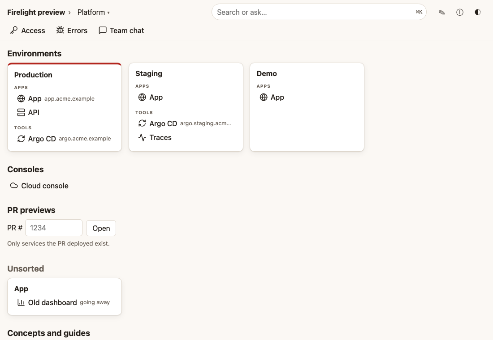

The docs your repos write about themselves.
What. Firelight reads a small .firelight/ folder in each of your repositories. It builds one docs site from them, and one search for people and agents.
Why. Docs that live apart from the code go stale. Here the docs sit in the same pull request as the change, so the team and its agents see the truth.
How. Your coding agent writes the folder. Firelight checks it, serves it, and tells you when an entry has gone stale. Everything is read-only and open source.

Install
curl -fsSL https://firelight.oss.life.li/install.sh | shRun it with Docker
docker run --rm -p 127.0.0.1:8080:8080 -v "$PWD:/repo:ro" -e FIRELIGHT_SOURCES='[{"id":"my-repo","kind":"dir","path":"/repo"}]' -e FIRELIGHT_SERVER_PUBLIC_URL=http://127.0.0.1:8080 -e FIRELIGHT_AUTH_UI=none -e FIRELIGHT_AUTH_MCP=none -e FIRELIGHT_EMBEDDER=off ghcr.io/prosperity-solutions/firelight:latestRun it in a repo with a .firelight/ folder, with my-repo replaced by the id in its repo.yaml. Drop FIRELIGHT_EMBEDDER=off for meaning search (the model downloads once).
Run it on Kubernetes
helm install firelight oci://ghcr.io/prosperity-solutions/charts/firelight --set publicUrl=https://firelight.acme.example --set config.auth.ui=none --set config.auth.mcp=noneAuth none suits a cluster behind a VPN or an auth proxy; the guide shows logins and tokens.
See the self-hosting guide for the rest.
Add a repo
Paste this prompt into your coding agent, inside the repo you want to add.
Set this repository up for Firelight, the docs your repos write about themselves.
1. Install the Firelight skill: `npx skills add prosperity-solutions/firelight` (or `firelight skills install --project`), then read it: `firelight skills format` and `firelight skills writing`.
2. Read this repository: what it is, what it is for, how it relates to the other repos it talks to, the links the team opens every day, and the questions people ask about it.
3. If the Firelight MCP server is connected, call `list_spaces` and `list_repos` first. Contribute to the spaces that already exist before declaring a new one, and use the other repos' ids in refs and relations.
4. Write `.firelight/`:
- `repo.yaml`: id, name, a one-sentence summary, the owner, its spaces, and honest `relations` ("when you do X here, also do Y there"), only the ones that really hold.
- `about.md`: the longer version of the summary.
- `links.yaml`: the links the team actually uses (environments, consoles, dashboards), placed on existing islands where they fit.
- 3 to 10 `concepts/`: what each important thing is, and what it is not.
- `guides/` for the tasks people ask about, step by step.
- `golden.yaml`: questions people would type, with the entries that must answer them.
Keep entries short, one idea each. Write only what you verified in this repository. Leave out anything secret or internal-only: no tokens, no internal hostnames you were not asked to publish, no personal data.
5. Run `firelight check` and `firelight preview --check` until both pass.
6. Add one rule to AGENTS.md: "Keep `.firelight/` true in the same PR as the change; run `firelight check` and `firelight preview --check`."
7. Add the Firelight GitHub Action to CI (see `firelight skills ci`).
8. Open a pull request with all of it.
Connect your agent
Give your agent read access to the docs over MCP.
claude mcp add --transport http firelight https://firelight.acme.example/mcp --header "Authorization: Bearer <token>"